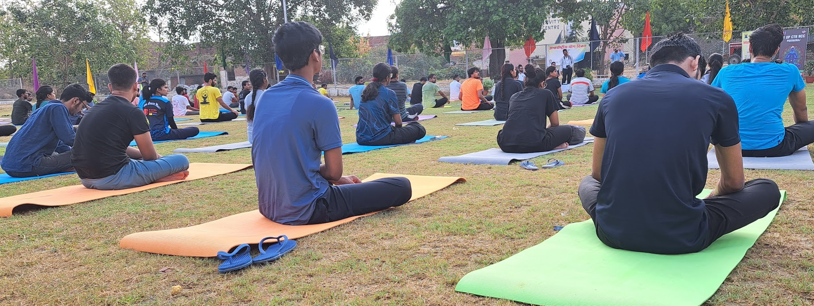
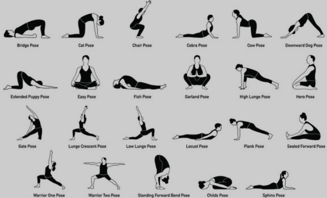

MNNIT's Yoga Webpage
-Making your everday better

#21/05/2023 picture of international yoga day in MNNIT campus
In this world where everyone is busy in there hectic schedule , Yoga is the only and the best method to calm
your mind and take care of your health .
Yoga is an ancient practice that originated in India thousands of
years ago. It encompasses a wide range of physical, mental, and spiritual disciplines aimed at promoting
overall well-being and harmony in life. The word "yoga" is derived from the Sanskrit word "yuj," which means
to unite or join. At its core, yoga seeks to unite the body, mind, and spirit.
There are several different paths and styles of yoga, each with its own emphasis and approach.
Some of the most popular styles include:
Hatha Yoga:
This is a broad category that includes many physical postures (asanas) and breathing exercises (pranayama) aimed at aligning and strengthening the body while also focusing on breath control and relaxation.
Vinyasa Yoga:
A more dynamic and flowing style of yoga that synchronizes movement with breath. Practitioners move through a series of poses in a seamless sequence.
Iyengar Yoga:
Known for its emphasis on precise alignment and the use of props (such as blocks, straps, and bolsters) to help practitioners achieve the correct alignment in each pose.
Ashtanga Yoga:
A rigorous and physically demanding style that follows a specific sequence of poses. It's known for its emphasis on strength, flexibility, and breath control.
Bikram Yoga:
Also known as "hot yoga," this style is practiced in a heated room (usually around 105°F or 40°C) with a specific sequence of 26 poses. The heat is believed to enhance flexibility and etoxification.
Kundalini Yoga:
Focuses on awakening the dormant spiritual energy (kundalini) believed to be located at the base of the spine. It incorporates a combination of postures, breathwork, meditation, and chanting.
Yin Yoga:
A slow-paced style that involves holding poses for longer periods (typically 3 to 5 minutes) to target the connective tissues and increase flexibility. It often has a meditative and introspective quality.
Restorative Yoga:
A deeply relaxing and nurturing style that uses props to support the body in passive poses, promoting relaxation and stress relief.

Different yoga posture
Yoga offers a wide range of physical and mental benefits, including improved flexibility, strength, balance, stress reduction, relaxation, and enhanced self-awareness. It's not just about physical postures; yoga also includes ethical principles, meditation practices, and a focus on cultivating a mindful and compassionate attitude toward oneself and others.
Many people find yoga to be a valuable tool for managing stress, improving their overall health, and connecting with a deeper sense of self. It's important to approach yoga with an open mind and find the style and approach that resonate most with your personal goals and needs. As with any physical activity, it's recommended to consult with a healthcare professional before beginning a new yoga practice, especially if you have any pre-existing health conditions.

Yoga club members
TIME AND LOCATION FOR YOGA PRACTICE
The Yoga section in our collage (MNNIT , Allhabad) start at 6:30 AM everyday accept the sunday's or festival holiday at EDCguest house (near kamla nehru girls hostel) and ends at 8:00 AM
For more information contact :
- Sunil Kumar Sharma(xxxxxxx@gmail.com)[Yoga Club coordinator(final year)]
- Sumit Saroj(xxxxxx@gmail.com)[Yoga Club Member(3rd year)]
- Shivangi Verma(shivangiverma7651@gmail.com)[Yoga Club Member(2nd year)]
- Shweta Sakshi(xxxxxxx@gmail.com)[Yoga Club Member(2nd year)]